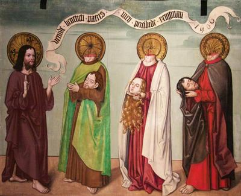

Sí, hay creencias religiosas que vistas desde el siglo XXI, no sólo son demasiado absurdas para una mente medianamente racional, sino que se parecen más a un relato de terror. Y una de las más atrevidas dentro del cristianismo son los llamados santos «cefalóforos»: supuestos personajes que, tras ser decapitados, se levantaron, recogieron su propia cabeza, y caminaron con ella en las manos durante varios metros, o incluso kilómetros.


Y no se trata de una broma para Halloween ni de una macabra historia de zombis; es una tradición hagiográfica formal, aceptada durante siglos por millones de creyentes (¿habrá todavía quien la crea?). El término cefalóforo proviene del griego kephalé (cabeza) y phoreo (llevar, portar), y designa a aquellos de quienes se decía que caminaron llevando su propia cabeza entre sus manos después de que fueron decapitados. Entre ellos figuran los «santos» Félix, Régula, Exuperancio, Justo de Beauvés, Dionisio de París, Cutberto de Lindisfarne, Valeria de Limoges, Laureano de Hungría, Donino, Nicasio de Reims, Ginés de la Jara, Vitores de Cerezo, Jovan Vladimi, Afrodisio y otros. En total se conocen más de cincuenta. Y bueno, hay que reconocer que la imaginación humana es extraordinaria; pero hoy la ciencia, y específicamente la fisiología moderna, no dejan espacio para historias de este tipo.
¿Qué ocurre durante una decapitación? Se trata, definitivamente, de una lesión totalmente incompatible con la vida consciente. En el mismo instante en que la cabeza es separada del cuerpo, son seccionadas las arterias carótidas y vertebrales, encargadas de irrigar el cerebro, y en consecuencia, el flujo sanguíneo encefálico cae prácticamente a cero en una fracción de segundo. Además, sabemos ahora que las neuronas dependen de un suministro continuo de oxígeno y glucosa, poseyendo apenas reservas energéticas. Por tanto, cuando ese aporte desaparece de forma súbita, la actividad cerebral consciente colapsa casi de inmediato. En términos prácticos, esto significa que la persona pierde la conciencia de forma casi instantánea.
¿Y existe dolor? Si bien la lesión produce una sensación enorme, para experimentar dolor el cerebro debe seguir funcionando y procesar esa información. Y en una decapitación sucede justamente lo contrario: la interrupción del flujo sanguíneo provoca una pérdida rapidísima de la conciencia, de modo que el cerebro deja de interpretar conscientemente las señales dolorosas casi al mismo tiempo que se generan.
Algunos estudios sugieren que puede persistir cierta actividad eléctrica residual durante unos pocos segundos después de interrumpirse completamente la circulación cerebral. Sin embargo, esto no significa que la persona continúe pensando, observando el entorno o planificando acciones. Se trata sólo de la inercia eléctrica de un órgano que acaba de perder su fuente de energía. Pero muy poco después, comienza un proceso irreversible de muerte neuronal, que culmina con la muerte encefálica.
Entonces, ¿puede un cuerpo decapitado levantarse y caminar? La respuesta rotunda es no. Todos los movimientos voluntarios dependen de órdenes emitidas por el cerebro y transmitidas al resto del organismo a través de la médula espinal. Y al producirse la decapitación, esa comunicación queda totalmente interrumpida. Por tanto, el cerebro ya no puede controlar ningún músculo del cuerpo.
Es cierto que tras una lesión tan grave pueden observarse espasmos, sacudidas o movimientos reflejos. Esto es porque la médula espinal puede conservar durante unos instantes cierta actividad automática capaz de producir contracciones musculares involuntarias. Sin embargo, esos reflejos, conocidos por la neurofisiología, no implican conciencia, intención ni coordinación. Y confundir esos espasmos con un cuerpo que se incorpora, recoge su cabeza y emprende una caminata de varios metros o kilómetros, implica ignorar por completo el funcionamiento más básico del sistema nervioso.
¿De dónde surgieron entonces esas absurdas historias? Los relatos sobre santos cefalóforos aparecieron durante los primeros siglos del cristianismo, cuando el conocimiento científico era muy, pero muy limitado, y la transmisión de la información dependía casi exclusivamente de la tradición oral. Y en ese contexto, las narraciones de supuestos hechos extraordinarios o «milagrosos», servían para fortalecer la devoción popular y engrandecer la figura de los «mártires».
Por otra parte, según esas leyendas, tras ser decapitados los «santos» caminaron hasta el sitio donde posteriormente se levantaría una iglesia dedicada a ellos. Así, «el milagro» no sólo exaltaba el supuesto heroísmo del «mártir», sino que también justificaba el carácter sagrado del santuario. Incluso Juan Crisóstomo (347–407), uno de los más influyentes Padres de la Iglesia, llegó a afirmar que algunos de esos «mártires» podían seguir hablando después de perder la cabeza. Una afirmación que ilustra no sólo la gran ignorancia de quienes formaron las bases de la doctrina cristiana, sino la enorme distancia entre la teología antigua y el conocimiento neurofisiológico actual.
Hoy, sin embargo, conocemos con bastante precisión cómo funciona el sistema nervioso, qué sucede cuando cesa el flujo sanguíneo cerebral, y por qué pueden aparecer determinados reflejos espinales tras lesiones extremas. Un conocimiento que permite afirmar con total certeza, que ningún ser humano puede levantarse, sostener su propia cabeza y caminar después de haber sido decapitado. Y no se trata de contradecir abiertamente la fe; este no es un tema de fe o de incredulidad, sino de anatomía, fisiología, neurociencia y biología.
Sin duda las historias de cefalóforos poseen interés cultural e histórico como parte del imaginario religioso medieval. Constituyen un ejemplo muy interesante de cómo las sociedades antiguas construían relatos para honrar a sus mártires, y explicar el origen de determinados lugares de culto. Pero aceptarlas como hechos históricos, exige ignorar totalmente lo que la ciencia moderna ha descubierto sobre el funcionamiento del cuerpo humano.
En definitiva, la ciencia no pretende burlarse de estas leyendas; simplemente nos recuerda un hecho fundamental: sin un cerebro funcional no hay conciencia, y sin una cabeza unida al cuerpo no existen movimientos voluntarios. Por tanto, las caminatas milagrosas de «santos cefalóforos», pertenecen solamente al terreno de la tradición religiosa y la literatura hagiográfica, no al de la fisiología humana.
[Godless Freeman]
[Crédito de imagen: Zürcher Veilchenmeister, Wikipedia]
Comentarios
Comments powered by Disqus